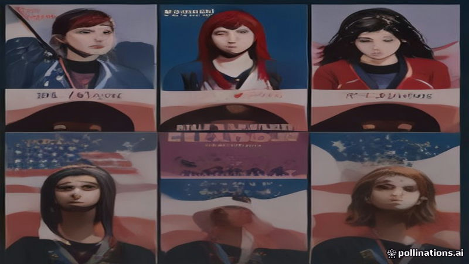

France 24 রিক্যাপস US মিডটার্ম জয়, ফরাসি ছাত্র প্রতিবাদ, ডাকার ইয়ুথ অলিম্পিক
France 24 · 2026-11-08
AI-generated illustrationFrance 24 যুক্তরাষ্ট্রের ডেমোক্র্যাটিক পার্টির শক্তিশালী মিডটার্ম পারফরম্যান্স, ফ্রান্সের চলমান ছাত্র প্রতিবাদ এবং ডাকার প্রথম ইয়ুথ অলিম্পিকের ছবি তুলে ধরেছে।
France 24 সাম্প্রতিক ঘটনাবলীর একটি ভিজ্যুয়াল রিভিউ প্রস্তুত করেছে, যেখানে যুক্তরাষ্ট্রের মিডটার্ম নির্বাচনে ডেমোক্র্যাটিক পার্টির উল্লেখযোগ্য জয়কে ব্লু ওয়েভ হিসেবে চিত্রিত করা হয়েছে। ছবিগুলো নির্বাচনী পরিবর্তনের পরিসরকে তুলে ধরেছে।
এছাড়াও প্রতিবেদনে ফ্রান্সে চলমান ছাত্র-নেতৃত্বাধীন প্রতিবাদ এবং ডাকার প্রথম ইয়ুথ অলিম্পিকের ছবি অন্তর্ভুক্ত রয়েছে, যা আফ্রিকায় প্রথম অলিম্পিক স্পোর্টস ইভেন্টের সূচনা চিহ্নিত করে। ছবিগুলো প্রতিবাদের উচ্ছ্বাস এবং ডাকার গেমসের ঐতিহাসিক পরিবেশকে প্রকাশ করে।
Read the original reporting at the links above.
English version
France 24 Recaps US Midterm Wins, French Student Protests, Dakar Youth Olympics
France 24 compiled a visual review of recent events, highlighting the Democratic Party’s significant victories in the United States midterm elections, which have been described as a Blue Wave. The visual series presents striking photographs that capture the scale of the electoral shift.
The coverage also includes images of continuing student‑led demonstrations across France and photographs from the first Youth Olympic Games held in Dakar, marking the debut of an Olympic sport event on African soil. The pictures convey the energy of the protests and the historic atmosphere of the Dakar games.